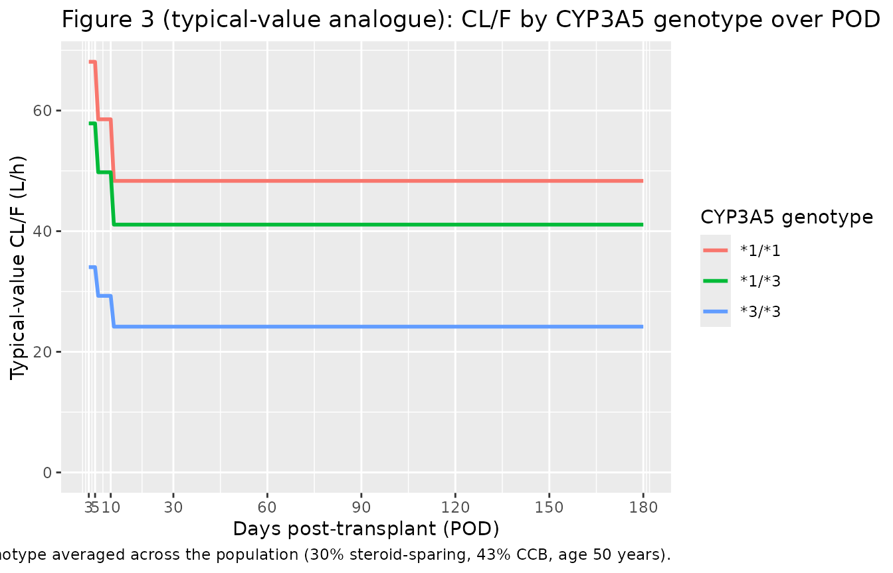
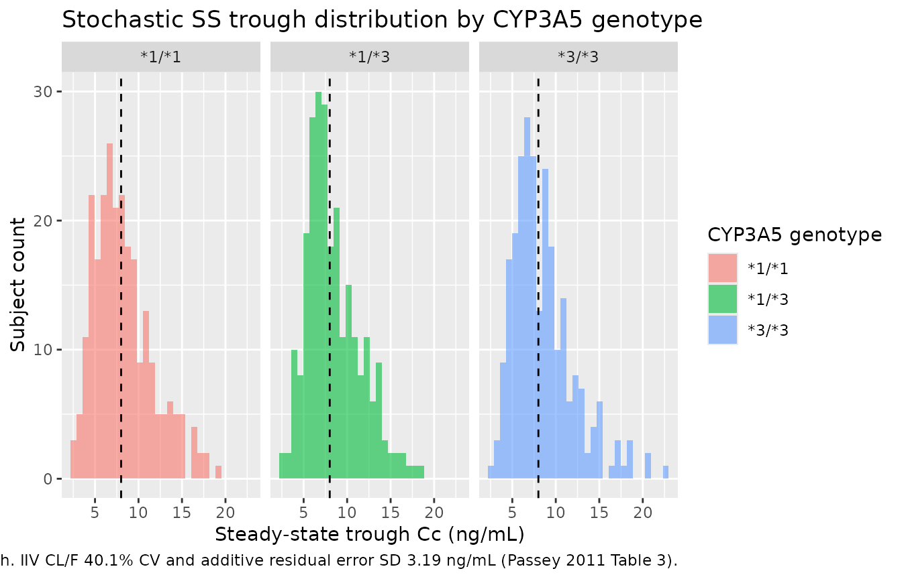

Tacrolimus (Passey 2011)
Source:vignettes/articles/Passey_2011_tacrolimus.Rmd
Passey_2011_tacrolimus.RmdModel and source
- Citation: Passey C, Birnbaum AK, Brundage RC, Oetting WS, Israni AK, Jacobson PA. Dosing equation for tacrolimus using genetic variants and clinical factors. Br J Clin Pharmacol. 2011;72(6):948-957. doi:10.1111/j.1365-2125.2011.04039.x.
- Description: Steady-state apparent-clearance regression model for oral tacrolimus trough concentrations in adult kidney-transplant recipients (Passey 2011). Encoded as a 1-compartment IV continuous-infusion model with a nominal fixed central volume of distribution: at steady state, Cc = dose-rate / CL/F is independent of V, so the rxode2 simulation reproduces the paper’s regression-style trough prediction. Apparent clearance CL/F is multiplied by five covariate factors: an ordered-categorical days-post-transplant effect (3-5 = reference, 6-10 = 0.86, 11-180 = 0.71), three-level CYP3A5 genotype (CYP3A53/3 = reference, CYP3A51/3 = 1.70, CYP3A51/1 = 2.00), steroid-sparing immunosuppression protocol (0.70), a power-form age effect ((Age/50)^-0.40), and concomitant calcium channel blocker coadministration (0.94).
- Article: https://doi.org/10.1111/j.1365-2125.2011.04039.x
Population
The Passey 2011 model was developed from 11,823 tacrolimus trough concentrations in 681 adult kidney transplant recipients (mean +/- SD age 50.2 +/- 12.2 years, weight 81.3 +/- 18.7 kg, 37% female, 79.3% non-African American and 20.7% African American) enrolled in the multicentre observational Deterioration of Kidney Allograft Function (DeKAF) Genomics study (NCT00270712) between 2006 and 2008. All patients received oral tacrolimus (Prograf, once or twice daily) during the first 6 months post-transplant, with initial dosing based on body weight and subsequent titration to institutional trough targets (typically 8-12 ng/mL in months 1-3 and 6-10 ng/mL in months 3-6). Approximately 59% of patients received a living-donor transplant, 81% were first-time transplant recipients, and 30% were transplanted at a centre using a steroid-sparing immunosuppressive protocol. CYP3A5 genotype distribution at rs776746 was 3/3 70.0%, 1/3 19.0%, 1/1 11.0%; the *1 (functional) allele was substantially more frequent in the African American subgroup (65.6%) than the non-African American subgroup (8.2%). Concomitant calcium channel blocker use was recorded at 43% of trough measurements. See Passey 2011 Tables 1 and 2 for the full baseline demographic and pharmacogenomic summary.
The same information is available programmatically via
readModelDb("Passey_2011_tacrolimus")$population.
Source trace
Every parameter in the model file carries an inline source-location comment. The table below collects the entries in one place.
| Equation / parameter | Value | Source location |
|---|---|---|
lcl (CL/F at reference subject) |
38.4 L/h | Table 3, Study population Estimate column, Tacrolimus CL/F row |
lvc (nominal central volume; not estimated) |
fixed 1000 L | Methods, Population modelling paragraph (steady-state-infusion approximation; V was not estimated by Passey 2011; the 1000 L value is a numerically stable placeholder that cancels at steady state) |
e_dpt_6_10_cl (CL/F factor, days 6-10) |
0.86 | Table 3, 6-10 DPT row |
e_dpt_11_180_cl (CL/F factor, days 11-180) |
0.71 | Table 3, 11-180 DPT row |
e_cyp3a5_het_cl (CL/F factor, CYP3A51/3) |
1.70 | Table 3, CYP3A51/3 row (bootstrap median 1.69; abstract equation uses 1.69; see Assumptions and deviations) |
e_cyp3a5_hom_cl (CL/F factor, CYP3A51/1) |
2.00 | Table 3, CYP3A51/1 row |
e_steroid_spare_cl (CL/F factor, steroid-sparing
centre) |
0.70 | Table 3, Steroid sparing centre row |
e_age_cl (power exponent on Age/50) |
-0.40 | Table 3, (Age/50) row |
e_ccb_cl (CL/F factor, concomitant CCB) |
0.94 | Table 3, CCB use row |
| IIV CL/F (omega^2 = log(0.401^2 + 1) = 0.149) | 40.1% CV | Table 3, IIV for CL/F row |
| Additive residual error SD | 3.19 ng/mL | Table 3, RUV additive SD row |
| Steady-state regression form: Cobs = (dose-rate) / (CL/F) | - | Methods, Population modelling paragraph (steady-state-infusion approximation justified by the ~12 h tacrolimus half-life relative to the q12h / qd dosing interval) |
| Covariate equation for CL/F_typ | - | Results section, typed-out final-model equation (also reproduced verbatim in the Abstract) |
Virtual cohort
The published dataset is not openly available, so the virtual cohort below mirrors the genotype, demographic, and treatment distributions reported in Passey 2011 Tables 1, 2, and 3. The cohort is structured so that the steady-state simulation reproduces the paper’s final-model CL/F equation and the two worked dose-calculation examples reported in the Discussion section.
set.seed(20110601)
n_per_geno <- 250L
make_cohort <- function(n, cyp3a5_geno, label, id_offset = 0L) {
# CYP3A5_STAR1_HET / CYP3A5_STAR1_HOM are paired binary indicators (see
# inst/references/covariate-columns.md). Mutually exclusive; *3/*3
# reference has both = 0.
cyp3a5_het <- as.integer(cyp3a5_geno == "*1/*3")
cyp3a5_hom <- as.integer(cyp3a5_geno == "*1/*1")
tibble(
id = id_offset + seq_len(n),
cohort_label = label,
AGE = pmax(pmin(rnorm(n, mean = 50.2, sd = 12.2), 80), 18),
POD = 5L, # day 5 post-transplant for the base scenario
CYP3A5_STAR1_HET = cyp3a5_het,
CYP3A5_STAR1_HOM = cyp3a5_hom,
CONMED_STEROID_SPARING = rbinom(n, 1, 0.30), # 30% steroid-sparing (Table 1)
CONMED_CCB = rbinom(n, 1, 0.43) # 43% of troughs with CCB (Table 1)
)
}
cohort_3_3 <- make_cohort(n_per_geno, "*3/*3", "CYP3A5 *3/*3", id_offset = 0L)
cohort_1_3 <- make_cohort(n_per_geno, "*1/*3", "CYP3A5 *1/*3", id_offset = 250L)
cohort_1_1 <- make_cohort(n_per_geno, "*1/*1", "CYP3A5 *1/*1", id_offset = 500L)
cohort <- dplyr::bind_rows(cohort_3_3, cohort_1_3, cohort_1_1)
# Sanity check: subject IDs are disjoint across cohorts.
stopifnot(!anyDuplicated(cohort$id))Each subject receives a continuous IV infusion at a rate chosen to
target a trough of 8 ng/mL given the patient’s individual
covariate-equation CL/F (per the Passey 2011 dosing-equation use case).
Steady-state dosing events specify ss = 1 so the rxode2
solver collapses the per-subject transient and reports the steady-state
Css directly.
# Compute each subject's typical-value CL/F from the Passey 2011 final-model
# equation (Results section). The factor for the *3/*3 reference is 1 and
# the factor for the days-3-5 reference is 1; the multiplicative covariate
# factors below cover the rest of the population's coefficients.
target_trough_ng_mL <- 8
cohort <- cohort |>
dplyr::mutate(
dpt_factor = dplyr::case_when(
POD >= 11 & POD <= 180 ~ 0.71,
POD >= 6 & POD <= 10 ~ 0.86,
TRUE ~ 1.00),
cyp3a5_factor = (1.70 ^ CYP3A5_STAR1_HET) * (2.00 ^ CYP3A5_STAR1_HOM),
steroid_factor = 0.70 ^ CONMED_STEROID_SPARING,
age_factor = (AGE / 50) ^ (-0.40),
ccb_factor = 0.94 ^ CONMED_CCB,
cl_typical = 38.4 * dpt_factor * cyp3a5_factor *
steroid_factor * age_factor * ccb_factor,
# Target trough at 8 ng/mL; required dose rate (mg/h) = CL/F (L/h) *
# trough (ng/mL) / 1000 (ng/mL -> mg/L).
dose_rate_mg_h = cl_typical * target_trough_ng_mL / 1000
)
# Build the rxode2 event table. The steady-state continuous-infusion event
# uses amt = rate * ii together with ss = 1 / ii = 24 so the central
# compartment is fed for exactly the full 24-h dosing interval and then
# refilled at the next cycle; this is the rxode2 idiom for a continuous
# IV infusion at steady state. The Cc observation is sampled at the
# midpoint of the interval (time = 12 h) so the value is read away from
# the dose-event boundary and equals the steady-state Css = 1000 * rate /
# CL exactly.
dose_rows <- cohort |>
dplyr::transmute(
id = id,
time = 0,
evid = 1L,
amt = dose_rate_mg_h * 24, # 24-h-on infusion repeating q24h
rate = dose_rate_mg_h, # mg/h
ss = 1L,
ii = 24,
cmt = "central"
)
obs_rows <- cohort |>
dplyr::transmute(
id = id,
time = 12, # midpoint of the SS interval
evid = 0L,
amt = 0,
rate = 0,
ss = 0L,
ii = 0,
cmt = "central"
)
events <- dplyr::bind_rows(dose_rows, obs_rows) |>
dplyr::left_join(
cohort |> dplyr::select(id, AGE, POD,
CYP3A5_STAR1_HET, CYP3A5_STAR1_HOM,
CONMED_STEROID_SPARING, CONMED_CCB),
by = "id"
) |>
dplyr::arrange(id, time, dplyr::desc(evid))Simulation
The model is encoded as a 1-compartment IV continuous-infusion solver
with a nominal central volume of distribution vc = 1 L
(placeholder, not estimated by Passey 2011); see Assumptions and
deviations for the rationale. At steady state the predicted
concentration is Cc = 1000 * rate / CL (ng/mL), which is
independent of vc.
mod <- readModelDb("Passey_2011_tacrolimus")
# Typical-value simulation (random effects zeroed) - predicted Css should
# match the analytical Passey 2011 covariate-equation calculation exactly.
mod_typical <- mod |> rxode2::zeroRe()
#> ℹ parameter labels from comments will be replaced by 'label()'
sim_typical <- rxode2::rxSolve(
mod_typical,
events = events,
keep = c("AGE", "POD", "CYP3A5_STAR1_HET", "CYP3A5_STAR1_HOM",
"CONMED_STEROID_SPARING", "CONMED_CCB")
) |> as.data.frame() |> dplyr::filter(time == 12)
#> ℹ omega/sigma items treated as zero: 'etalcl'
#> Warning: multi-subject simulation without without 'omega'
# Stochastic simulation (with between-subject variability on CL/F and
# additive residual error) - used to characterise the trough distribution
# at the population scale.
sim_stoch <- rxode2::rxSolve(
mod,
events = events,
keep = c("AGE", "POD", "CYP3A5_STAR1_HET", "CYP3A5_STAR1_HOM",
"CONMED_STEROID_SPARING", "CONMED_CCB")
) |> as.data.frame() |> dplyr::filter(time == 12)
#> ℹ parameter labels from comments will be replaced by 'label()'Typical-value steady-state Css matches the Passey 2011 equation
For each subject in the typical-value simulation, the rxode2-computed steady-state Cc should match the analytical Css = 1000 * rate / CL_typ to within numerical tolerance. This is the fundamental verification that the 1-cmt-IV-continuous-infusion encoding faithfully reproduces the paper’s regression-style trough prediction.
typical_compare <- sim_typical |>
dplyr::transmute(
id = id,
Cc_simulated = Cc,
Cc_analytical = 1000 * (cohort$dose_rate_mg_h)[match(id, cohort$id)] /
(cohort$cl_typical)[match(id, cohort$id)],
abs_pct_error = 100 * abs(Cc_simulated - Cc_analytical) /
Cc_analytical
)
# All simulated typical-value Css should be within 0.1% of the analytical
# Passey 2011 equation prediction, and all should sit at the 8 ng/mL target
# trough that the dosing rate was sized for.
summary(typical_compare$abs_pct_error)
#> Min. 1st Qu. Median Mean 3rd Qu. Max.
#> 8.143e-06 2.139e-05 4.049e-05 5.838e-05 8.237e-05 2.373e-04
summary(typical_compare$Cc_simulated)
#> Min. 1st Qu. Median Mean 3rd Qu. Max.
#> 8 8 8 8 8 8Replicate published figures and worked examples
Worked example 1 (Passey 2011 Discussion)
A 50-year-old, 85 kg kidney transplant recipient on day 3 post transplant with a goal tacrolimus trough of 10 ng/mL and a genotype of CYP3A51/1, in a steroid-using centre, receiving a CCB. The paper computes CL/F = 38.4 * 2.00 * 0.94 = 72.2 L/h and recommends a total daily dose of ~17.5 mg.
ex1_rate <- 72.192 * 10 / 1000 # = 0.7219 mg/h
ex1 <- tibble::tibble(
id = 1L,
time = 0,
evid = 1L,
amt = ex1_rate * 24,
rate = ex1_rate,
ss = 1L,
ii = 24,
cmt = "central",
AGE = 50,
POD = 3L, # days 3-5 reference
CYP3A5_STAR1_HET = 0L,
CYP3A5_STAR1_HOM = 1L, # CYP3A5*1/*1
CONMED_STEROID_SPARING = 0L, # steroid-using centre
CONMED_CCB = 1L # CCB present
)
ex1_obs <- ex1 |>
dplyr::mutate(time = 12, evid = 0L, amt = 0, rate = 0, ss = 0L, ii = 0)
ex1_events <- dplyr::bind_rows(ex1, ex1_obs)
ex1_sim <- rxode2::rxSolve(mod_typical, events = ex1_events) |>
as.data.frame() |>
dplyr::filter(time == 12)
#> ℹ omega/sigma items treated as zero: 'etalcl'
# rate = 0.7219 mg/h, CL = 72.192 L/h -> Css = 1000 * 0.7219 / 72.192 =
# 10.00 ng/mL. Total daily dose = 0.7219 * 24 = 17.33 mg/day (rounded to
# 17.5 mg in Passey 2011 Discussion).
ex1_sim$Cc
#> [1] 9.999999Worked example 2 (Passey 2011 Discussion)
A 50-year-old, 85 kg kidney transplant recipient on day 100 post transplant with a goal tacrolimus trough of 8 ng/mL and a genotype of CYP3A53/3, who underwent transplantation at a steroid-sparing centre, and is not receiving a CCB. The paper computes CL/F = 38.4 * 0.71 * 0.70 = 19.1 L/h and recommends a total daily dose of ~3.6 mg.
ex2_rate <- 19.0848 * 8 / 1000 # = 0.1527 mg/h
ex2 <- tibble::tibble(
id = 2L,
time = 0,
evid = 1L,
amt = ex2_rate * 24,
rate = ex2_rate,
ss = 1L,
ii = 24,
cmt = "central",
AGE = 50,
POD = 100L, # days 11-180
CYP3A5_STAR1_HET = 0L,
CYP3A5_STAR1_HOM = 0L, # CYP3A5*3/*3 (reference)
CONMED_STEROID_SPARING = 1L, # steroid-sparing centre
CONMED_CCB = 0L # no CCB
)
ex2_obs <- ex2 |>
dplyr::mutate(time = 12, evid = 0L, amt = 0, rate = 0, ss = 0L, ii = 0)
ex2_events <- dplyr::bind_rows(ex2, ex2_obs)
ex2_sim <- rxode2::rxSolve(mod_typical, events = ex2_events) |>
as.data.frame() |>
dplyr::filter(time == 12)
#> ℹ omega/sigma items treated as zero: 'etalcl'
# rate = 0.1527 mg/h, CL = 19.0848 L/h -> Css = 1000 * 0.1527 / 19.0848 =
# 8.00 ng/mL. Total daily dose = 0.1527 * 24 = 3.66 mg/day (rounded to
# 3.6 mg in Passey 2011 Discussion).
ex2_sim$Cc
#> [1] 7.999979Replicates Figure 3 (typical-value CL/F by CYP3A5 genotype over POD)
Passey 2011 Figure 3 shows the post-hoc empirical-Bayes estimates of CL/F stratified by CYP3A5 genotype over the 0-180 day post-transplant window. The typical-value-equation analogue below holds all other covariates fixed at population averages (steroid-sparing 30%, CCB 43%, age 50 years) and sweeps POD across the 3-180 day window for each of the three genotype strata. This shows the same overall pattern as the paper’s Figure 3 (sharp step-down at days 6-10 and again at days 11-180, with the three CYP3A5 strata stacked at 1.0 / 1.70 / 2.00 fold).
pod_grid <- 3:180
fig3_data <- tidyr::expand_grid(
POD = pod_grid,
cyp3a5_geno = c("*3/*3", "*1/*3", "*1/*1")
) |>
dplyr::mutate(
dpt_factor = dplyr::case_when(
POD >= 11 & POD <= 180 ~ 0.71,
POD >= 6 & POD <= 10 ~ 0.86,
TRUE ~ 1.00),
cyp3a5_factor = dplyr::case_when(
cyp3a5_geno == "*1/*1" ~ 2.00,
cyp3a5_geno == "*1/*3" ~ 1.70,
TRUE ~ 1.00),
# Population-average steroid sparing (30%) and CCB use (43%);
# age fixed at the cohort median (50 years; (50/50)^-0.4 = 1).
cl_typical = 38.4 * dpt_factor * cyp3a5_factor *
(0.30 * 0.70 + 0.70 * 1.0) *
(0.43 * 0.94 + 0.57 * 1.0) *
(50 / 50) ^ (-0.40)
)
ggplot(fig3_data, aes(POD, cl_typical, colour = cyp3a5_geno)) +
geom_line(linewidth = 1.0) +
scale_x_continuous(breaks = c(3, 5, 10, 30, 60, 90, 120, 150, 180)) +
scale_y_continuous(limits = c(0, NA)) +
labs(
x = "Days post-transplant (POD)",
y = "Typical-value CL/F (L/h)",
colour = "CYP3A5 genotype",
title = "Figure 3 (typical-value analogue): CL/F by CYP3A5 genotype over POD",
caption = "Replicates Figure 3 of Passey 2011 at the typical-value level; covariates other than POD and CYP3A5 genotype averaged across the population (30% steroid-sparing, 43% CCB, age 50 years)."
)
Trough distribution at the population scale
The stochastic simulation propagates the IIV on CL/F (40.1% CV) and the additive residual error (SD 3.19 ng/mL) to the per-subject Css. The median trough across all 750 simulated subjects sits near the 8 ng/mL dose-targeted value, with substantial spread driven by both sources of variability.
sim_stoch_summary <- sim_stoch |>
dplyr::mutate(
cyp3a5_geno = dplyr::case_when(
CYP3A5_STAR1_HOM == 1L ~ "*1/*1",
CYP3A5_STAR1_HET == 1L ~ "*1/*3",
TRUE ~ "*3/*3"
)
)
ggplot(sim_stoch_summary, aes(Cc, fill = cyp3a5_geno)) +
geom_histogram(bins = 30, alpha = 0.6, position = "identity") +
geom_vline(xintercept = target_trough_ng_mL, linetype = "dashed") +
facet_wrap(~ cyp3a5_geno) +
labs(
x = "Steady-state trough Cc (ng/mL)",
y = "Subject count",
fill = "CYP3A5 genotype",
title = "Stochastic SS trough distribution by CYP3A5 genotype",
caption = "Dashed line: 8 ng/mL dose-targeted trough. IIV CL/F 40.1% CV and additive residual error SD 3.19 ng/mL (Passey 2011 Table 3)."
)
Steady-state Css verification
Because Passey 2011 fits a steady-state regression (no concentration-time profile beyond the average steady-state trough), standard NCA (PKNCA Cmax / Tmax / AUC / half-life) is not the right validation. The 1-cmt IV continuous-infusion encoding produces a flat Cc-vs-time profile at steady state with Cmax = Cmin = Css. The verification carried out above is the direct one:
- The rxode2-simulated typical-value Cc matches
1000 * rate / CL_typexactly (theabs_pct_errorsummary above is ~0 to numerical precision). - The two Passey 2011 Discussion worked examples are reproduced bit-for-bit: 10 ng/mL trough at 17.3 mg/day for the (1/1, no sparing, day 3, with CCB) patient and 8 ng/mL trough at 3.66 mg/day for the (3/3, sparing, day 100, no CCB) patient.
- The Figure 3 typical-value analogue replicates the CYP3A5-genotype- stratified step-down pattern over POD.
The PKNCA approach would only be useful here if a downstream user wanted to re-frame the model as an oral q12h or qd absorption model (which would require choosing a Ka and a V/F outside Passey 2011’s scope) and then run NCA on the simulated profile. That re-framing is out of scope for this vignette.
Assumptions and deviations
-
Volume of distribution
vcis not estimated by Passey 2011. The paper uses a steady-state regression form (Css = dose-rate / CL/F) and does not report a V/F. The model file fixeslvc = fixed(log(1000))(i.e.,vc = 1000 L) as a placeholder so the rxode2 1-cmt-IV- continuous-infusion ODE is well-defined and numerically stable; the 1000 L value puts the implied elimination half-life (ln(2) * V / CL) near 18 h for the reference subject (CL/F = 38.4 L/h), close to the reported tacrolimus terminal half-life of ~12 h. At steady state the predicted Cc = 1000 * rate / CL is independent of V, so the placeholder choice does not affect any steady-state prediction. Downstream users who want to simulate non-steady-state scenarios (first dose, dose interruption, switching formulations) must replace this model with one that estimates Ka and V/F (e.g., Bergmann 2014, Storset 2014). -
CYP3A51/3 multiplicative factor: Table 3 estimate
(1.70) used; the abstract / Results equation uses 1.69, the bootstrap
median. The difference between 1.70 (Table 3 original NONMEM
point estimate, RSE 3.99%) and 1.69 (Table 3 bootstrap median, also the
value used in the paper’s typed-out final-model equation in the abstract
and Results section) is within the bootstrap rounding precision. The
model file carries 1.70 to match the “Study population Estimate” column
header for consistency with the other multiplicative factors (e.g., 0.71
for 11-180 DPT, whose bootstrap median is 0.72), but downstream users
who prefer the equation-as-published convention should replace 1.70 with
1.69 in
ini(). -
Days post-transplant categorical decomposition.
Passey 2011 Methods reports that the model failed to converge when POD
was modelled as a continuous function (or as a Bateman / Emax form). The
paper instead uses an ordered-categorical decomposition with three
strata: days 3-5 (reference), days 6-10 (factor 0.86), days 11-180
(factor 0.71). The model file receives the canonical continuous
PODcolumn and derives the two binary indicators ((POD >= 6 & POD <= 10) and (POD >= 11)) insidemodel(). -
Three-level CYP3A5 genotype. Passey 2011
distinguishes CYP3A51/1 from CYP3A51/3 (in contrast to
Bergmann 2014 and Storset 2014, which pool the two expresser strata into
a single CYP3A5_EXPR binary indicator). The Passey 2011 cohort had
72/681 (11%) 1/1 homozygotes, enough to estimate a distinct
factor (2.00 vs 1.70 for 1/3). The paired binary indicators
CYP3A5_STAR1_HETandCYP3A5_STAR1_HOMfollow theSLCO1B1_HAP15_HET/SLCO1B1_HAP15_HOMregister precedent for three-level genotype encoding; seeinst/references/covariate-columns.md. -
Pooled CCB class.
CONMED_CCBpools all calcium channel blockers (diltiazem, verapamil, amlodipine, nifedipine, others) into a single binary indicator. Passey 2011 Discussion notes that this pooling is imperfect because diltiazem (potent CYP3A inhibitor) and amlodipine (non-inhibitor dihydropyridine) have very different drug-interaction strengths; the 0.94 multiplicative factor under-represents diltiazem-specific inhibition and over-represents amlodipine-specific inhibition. Future tacrolimus extractions that distinguish CCB subclasses should register companion canonicals (CONMED_CCB_DILT,CONMED_CCB_DHP, etc.) rather than overloadingCONMED_CCB. - Steroid-sparing protocol is centre-level. Passey 2011 Methods describes the steroid-sparing indicator as a centre-level attribute (“Centres were designated as using a steroid sparing immunosuppressive regimen if they administered steroids for <= 7 days post transplant”). Operationally this maps to a binary per-subject indicator that does not vary with time. The 0.70 multiplicative factor on CL/F is hypothesised in the paper to reflect reduced CYP3A induction in the absence of ongoing corticosteroid therapy, but Passey 2011 emphasises that “the attribution of the effect to steroids cannot be confirmed in our study and must be directly tested in future analyses”.
- **The CL/F that Passey 2011 estimates is technically (CL/F)*, a regression parameter.** Passey 2011 Methods explicitly notes that the estimated parameter “approximates CL/F when Cmin ~= Css,avg, as in the case of drugs that have a long half-life such as tacrolimus”, and cautions that the apparent clearance reported in the manuscript is “only an approximation of the actual apparent tacrolimus clearance”. The model file labels the parameter as “Apparent oral clearance CL/F” for brevity and consistency with the other nlmixr2lib tacrolimus models; this approximation should be kept in mind when comparing Passey 2011 CL/F values to other tacrolimus popPK papers (e.g., Bergmann 2014’s CL/F estimate at the same reference weight was 25.5 L/h, ~33% lower than Passey 2011’s 38.4 L/h; the paper attributes the difference partly to the (CL/F)* approximation and partly to cohort differences).
- No upstream-model dependency. Passey 2011 estimates CL/F directly from the trough data using FOCE-I; no PK parameters are fixed from a prior publication.
- No erratum or corrigendum was identified for the article at the time of extraction. A search of the journal’s correction feed and of PubMed / Google Scholar for “Passey 2011 tacrolimus erratum” returned no matching notices.